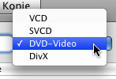
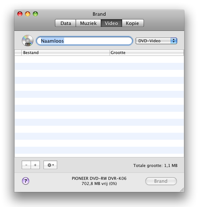
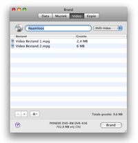
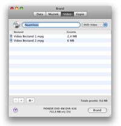
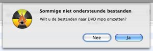
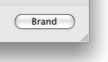
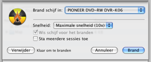
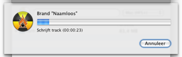

Video schijven branden
Brand kan vier verschillende video schijven branden. VCD
was het eerste digitale video schijf formaat. Daarna kwam SVCD, die een
hogere resolutie bood. Daarna kwam de DVD-Video schijf, dat nu de meest
gebruikte manier is om digitale video te verspreiden. Een hoop moderne
DVD-Spelers kunnen DivX schijven afspelen. Dit formaat is voor populair
op het internet. DivX bestanden zijn vaak kleiner dan MPEG2 (gebruikt
op DVD-Video schijven), maar zijn toch goed te kijken.
1 Selecteer een formaat
Kies een formaat uit het popup menu. Het is handig om te
weten welke schijven door jouw speler kunnen worden afgespeeld.
Raadpleeg hiervoor de handleiding of de speler.

2 Selecteer videobestanden
Selecteer video bestanden, de meeste videobestanden zijn
ondersteund.
Let op: sommige beveiligde QuickTime bestanden worden
niet ondersteund.

3 Sleep de bestanden naar de lijst
Sleep de geselecteerde bestanden naar de lijst. Als de
bestanden al het goede formaat hebben worden toegevoegd, anders worden
ze omgezet.
 


4 Klik op Brand
Hierdoor word een dialoog getoond.

5 Kies opties
Kies hier de voor de opties tijdens het branden gebruikt moeten worden.
Voor meer brand instellingen zie de "Voorkeuren" onder het Brand menu.

6 Brand de schijf
Klik op Brand om de schijf te branden.
7 Brand
gaat nu de schijf branden
Tijdens
het branden wordt een dialoog getoond met de voortgang.
